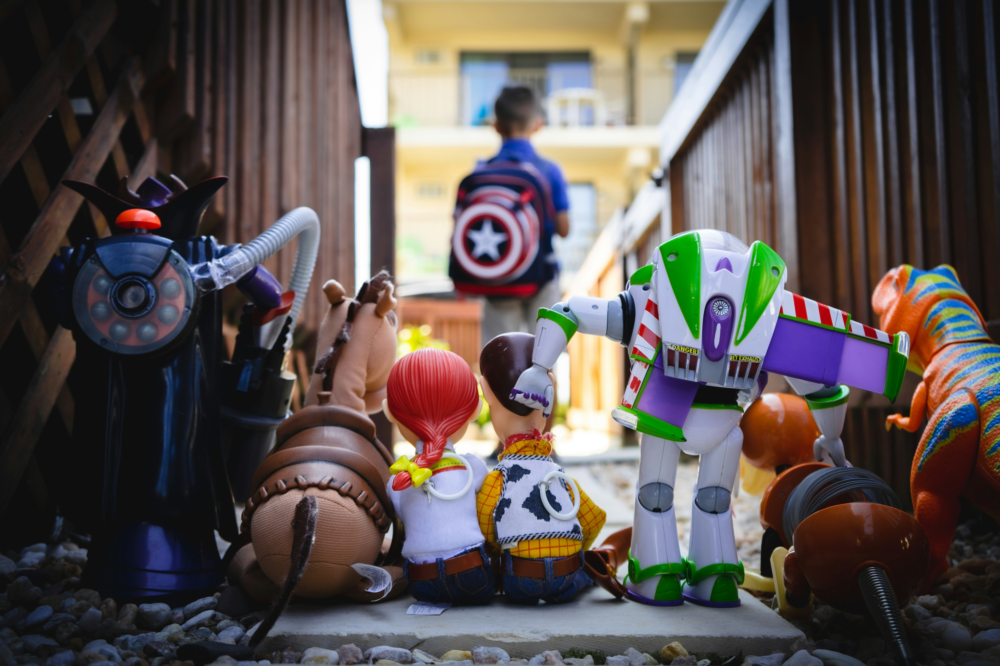
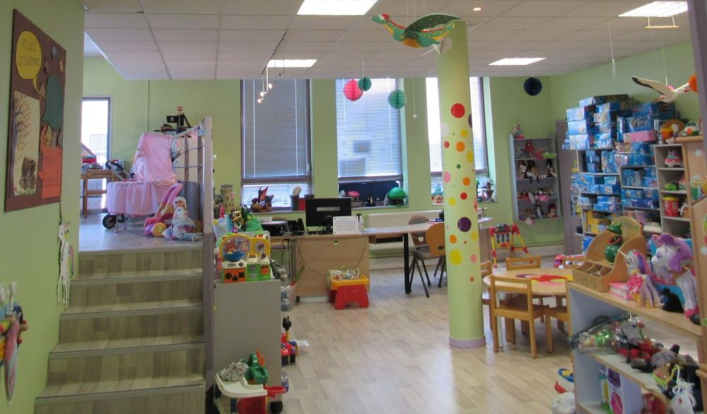

Ludothèque à Saint-Saulve pour tous
Espace Athéna
place du 8 mai 1945
59880 Saint-Saulve
email : ??????@gmail.com


La ludothèque pour tous de Saint-Saulve est un espace dédié au jeu sous toutes ses formes. Un space agréable située dans le hall de l’Espace Athena, sur la gauche, face à la bibliothèque. L’accès est simple et le stationnement sur la Place 8 mai à Saint-Saulve.
Le jeu, activité non contrainte, est indispensable à la construction de la personnalité de l’enfant, à sa socialisation, le jeu fait peu à peu passer l’enfant du stade passif à un statut d’acteur et le conduit vers un devenir adulte responsable et autonome. Les jeux doivent être source de plaisirs, de découvertes, et de conquêtes.
Des Playmobil, il y en a plein les étagères, des anciens et des nouveaux… Nous avons également des tricycles, des patinettes, des jeux de société, des puzzles, des jeux de construction, des poupées, poussettes, landaus, des voitures, beaucoup de jouets pour bébés ….. des jeux et jouets pour tous les âges.
La Ludothèque s'adresse également aux adultes qui souhaitent organiser une soirée jeux de société entre amis (Notamment avec les jeux anciens !).

A chaque retour des jeux un inventaire est fait afin de garantir le bon état de ceux-ci. Le respect du règlement intérieur est impératif au bon fonctionnement de la ludothèque, nous le communiquons lors de l'inscription et il est affiché dans la ludothèque.
Des achats sont faits plusieurs fois dans l'année selon les nouveautés mais aussi les demandes des familles ou des enfants.
La Ludothèque est une association dépendent de l'association départementale Culture et Bibliothèques pour Tous (CBPT).
Une équipe de bénévoles se relaie pour vous accueillir, conseiller, écouter vos souhaits, prêter.



Horaires d'ouverture
Prêt de jeux
Mardi de 16h00 à 18h00
Mercredi de 16h45 à 18h00
Vendredi de 16h00 à 18h00
Le 1er samedi du mois 14h15 à 16h15
Atelier Parents-Enfants
2 premiers mercredi du mois de 16h00 à 16h45
Soirée jeux de plateau
Jeudi de 18h00 à 22h00

Tarifs
Le droit d'inscription annuel varie selon le lieu de résidence (Saint-Saulve ou extérieur) et l'adhésion à la MJC (50%)
Inscription annuelle
10 € /an par famille Saint-Saulviens
14 € /an par famille exterieurs
5 € /an Saint-Saulviens adherents MJC
7 € /an exterieurs adherents MJC
L'inscription permet le prêt des jouets par 15 jours sauf pour les jeux d'estaminets
Emprunt

Localisation et accès
Ludothèque Pour Tous - Espace Athena
Place du 8 mai 1945
59880 Saint Saulve
03 27 28 15 37
??????@gmail.com